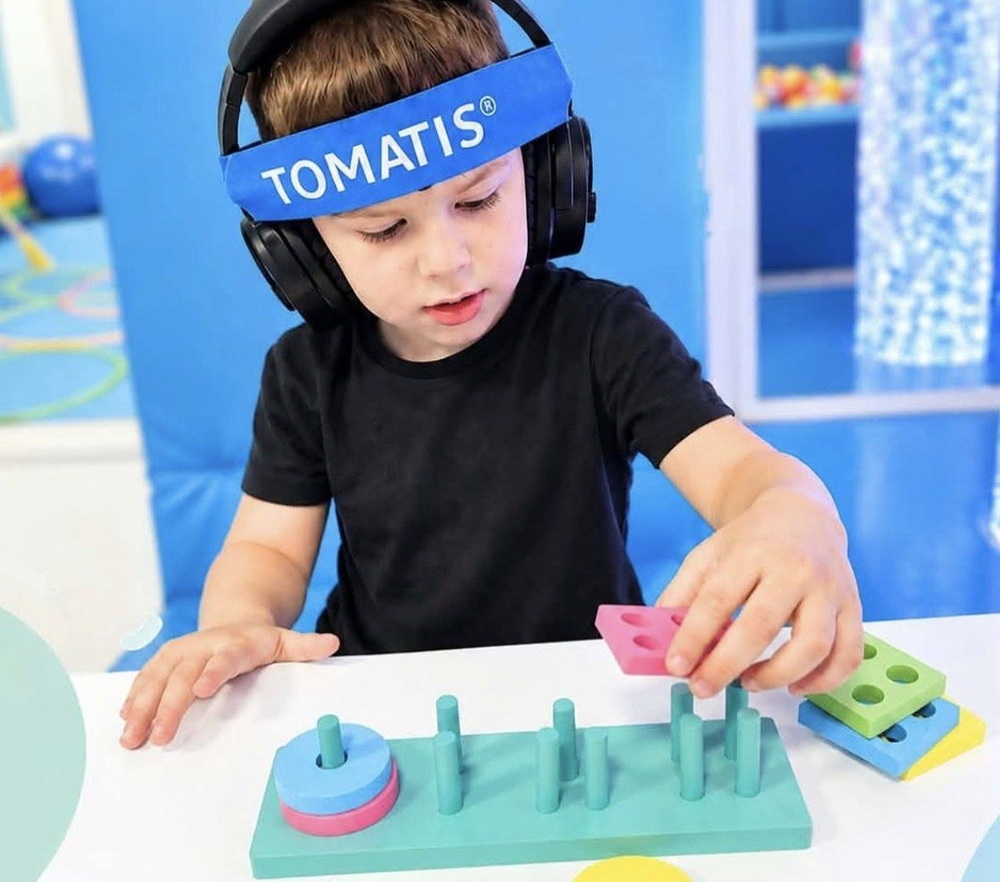

Program zvučne stimulacije koji kroz posebno obrađenu muziku i glas podržava način na koji dijete sluša, obrađuje zvuk i usmjerava pažnju, kao dio šireg, individualnog plana rada.
Program vodi Melina Sendić, logoped, audiolog i Tomatis praktičar

Šta je Tomatis?
Tomatis je metoda slušne stimulacije. Dijete preko posebnih slušalica, koje zvuk prenose i vazdušnim i koštanim putem, sluša muziku i glas obrađene tako da naizmjenično „bude” i opuštaju slušni sistem.
Cilj je podržati slušnu obradu i sposobnost da se dijete usmjeri na ono što čuje, što je temelj za govor, jezik, pažnju i učenje. U našem centru Tomatis se uvijek uključuje nakon procjene i kombinuje s logopedskim ili defektološkim radom.
Kada razmisliti o programu?
Roditelji nam se najčešće javljaju kada primijete da dijete:
kasni u razvoju govora i jezika
teško održava pažnju i lako se ometa
preosjetljivo reaguje na zvukove
ima teškoće s čitanjem, pisanjem ili učenjem
se teže snalazi u komunikaciji s drugima
ima teškoće s ritmom, koordinacijom ili ravnotežom
Da li je program prikladan za vaše dijete, procjenjuje stručnjak na prvom susretu.
Kako program izgleda?
01
Procjena i razgovor s roditeljima
Upoznajemo dijete, njegove navike i teškoće, i zajedno odlučujemo da li je Tomatis dobar izbor.
02
Intenzivni ciklus slušanja
Dijete sluša program u centru, dok se istovremeno igra, crta ili slaže, u mirnom, prijatnom okruženju.
03
Pauza i integracija
Između ciklusa slijedi pauza tokom koje pratimo kako dijete reaguje kod kuće, u vrtiću ili školi.
04
Novi ciklusi prema potrebi
Trajanje i broj ciklusa određujemo individualno, uz redovne razgovore s roditeljima. [Tačan raspored ciklusa: potvrditi]
Šta roditelji mogu očekivati?
Jasno objašnjenje programa prije početka, redovne povratne informacije i smjernice za podršku kod kuće. Svako dijete reaguje na svoj način i svojim tempom. Zato napredak pratimo zajedno s vama i plan prilagođavamo kad god je to potrebno.
Tomatis ne zamjenjuje medicinsku dijagnostiku niti liječenje; kada je potrebno, preporučujemo konsultaciju s pedijatrom ili drugim specijalistom.
Napravimo prvi korak zajedno.
Zakažite procjenu i saznajte da li je Tomatis pravi izbor za vaše dijete.